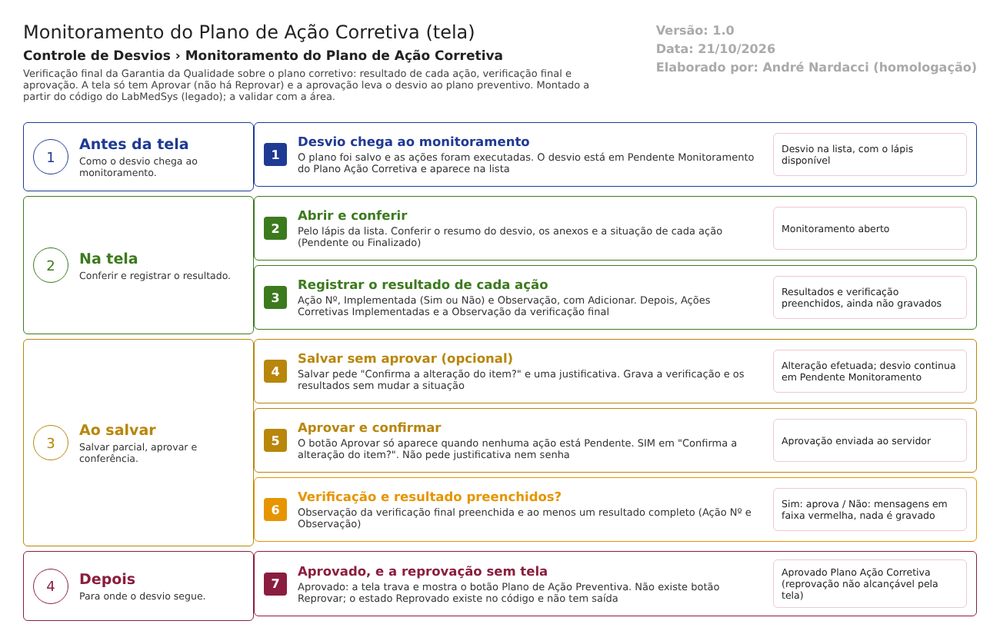

Resumo da tela
Monitoramento do Plano de Ação Corretiva
Menu: Controle de Desvios › Monitoramento do Plano de Ação Corretiva (o código também chama a tela de "Liberação Plano de Ação Corretiva"). Versão legado (código entregue pelo fornecedor). Rascunho de 21/10/2026, feito só pela leitura do código; o que não foi testado está marcado como "A confirmar no teste".
Para que serve
É a verificação final da Garantia da Qualidade sobre o plano corretivo. A GQ confere as ações já finalizadas, registra o resultado da implementação de cada ação (número da ação, se foi implementada e uma observação), faz a verificação final (ações implementadas, sim ou não, e observação) e aprova o plano. Há também um "Salvar" que guarda o trabalho sem aprovar.
Quem usa
- Garantia da Qualidade.
- Os responsáveis pelas ações e quem registrou o desvio não usam esta tela.
Em que situação o desvio chega aqui
- Pendente Monitoramento do Plano Ação Corretiva: situação em que o desvio fica depois que o plano é salvo (PlanoAcaoCorretivaRNCController.cs:224). É a única situação em que a lista oferece o ícone Editar (GerenciadorAcessoTelaLiberacaoPlanoAcaoCorretiva.cs:19-22).
- A lista também traz desvios em Aprovado Plano Ação Corretiva e Reprovado Plano Ação Corretiva, só para consulta (LiberacaoPlanoAcaoCorretivaRNCController.cs:69-71).
Para onde vai ao salvar
- Aprovar: Aprovado Plano Ação Corretiva (LiberacaoPlanoAcaoCorretivaRNCController.cs:236-237). O desvio segue para o Plano de Ação Preventiva.
- Salvar (parcial): a situação não muda (:289-358).
- Reprovar: o código prevê Reprovado Plano Ação Corretiva (:241-242), mas a tela não tem botão Reprovar (DV-GQ-016). Desse estado nenhuma tela leva o desvio adiante.
Arquivos do código
Caminhos relativos a 5.garantia_qualidade/app/. Nas fontes das tabelas abaixo, usa-se só o nome do arquivo e a linha.
- Controlador: HSolutions.GQ.UI/Areas/Bloco2/Controllers/LiberacaoPlanoAcaoCorretivaRNCController.cs
- Views: HSolutions.GQ.UI/Areas/Bloco2/Views/LiberacaoPlanoAcaoCorretivaRNC/Index.cshtml (lista) e Editar.cshtml (monitoramento; também serve de visualização). Visualizar.cshtml existe, com o título "Liberação Plano de Ação Corretiva", mas o controlador não o usa (abre Editar travado, LiberacaoPlanoAcaoCorretivaRNCController.cs:189). Incluir.cshtml é vazio (só o texto "Incluir"), sem ação no controlador.
- Partes comuns: HSolutions.GQ.UI/Areas/Bloco2/Views/Shared/_PartialRegistroNC.cshtml, _GridAcoesCorretivas.cshtml, _GridAcoesResultados.cshtml; HSolutions.GQ.UI/Views/Shared/_UploadArquivo.cshtml, _GridAnexos.cshtml, _ConfirmacaoPopUpPartail.cshtml, _SucessoErrorPopUpPartail.cshtml, _ModalJustificativa.cshtml
- Scripts: HSolutions.GQ.UI/Areas/Bloco2/Script/LiberacaoPlanoAcaoCorretivaIndex.js, LiberacaoPlanoAcaoCorretivaSalvar.js; HSolutions.GQ.UI/Scripts/Anexos.js, HSGridApi.js, HSApi.js
- Regras: HSolutions.GQ.Domain/Service/LiberacaoPlanoAcaoCorretivaValidator.cs; entidades HSolutions.GQ.Domain/Entities/Bloco2/ControleDesvios/LiberacaoPlanoAcaoCorretivaRNC.cs e AcaoResultado.cs
- Modelos: HSolutions.GQ.UI/Areas/Bloco2/Models/LiberacaoPlanoAcaoCorretivaIndexModel.cs, LiberacaoPlanoAcaoCorretivaIndexResultadoModel.cs, RegistroNaoConformidadeEditarModel.cs
- Acesso e base: HSolutions.GQ.UI/Helpers/GerenciadorAcessoTelaLiberacaoPlanoAcaoCorretiva.cs, GerenciadorAcesso.cs, HSolutions.GQ.UI/Controllers/GQControllerBase.cs, AnexoController.cs, UploadController.cs, HSolutions.GQ.Infrastructure/Repository/RepositoryBase.cs
Manual do usuário
Antes de começar
O plano precisa ter sido salvo e as ações, executadas. O botão Aprovar só aparece quando nenhuma ação do plano está Pendente. Se alguma ação ainda não foi finalizada, peça ao responsável que a conclua na tela Execução do Plano de Ação Corretiva.
Tela de lista (Index)
- Passo 1. No menu, abra Controle de Desvios › Monitoramento do Plano de Ação Corretiva. A tela mostra o quadro "Pesquisa". Clique em Pesquisar para listar.
- Passo 2. Filtros: RD/Nº, Descrição, Data Início e Data Fim (calendário, dd/mm/aaaa) e Situação (Pendente Monitoramento do Plano Ação Corretiva, Reprovado Plano Ação Corretiva ou Aprovado Plano Ação Corretiva). Limpar esvazia tudo.
- Passo 3. A lista mostra RD/Nº, Descrição, Data Abertura e Situação, com os ícones Editar (lápis), Histórico, Imprimir e, quando o lápis não está disponível, Visualizar.
- Passo 4. Se nada for encontrado: "A pesquisa não retornou nenhum resultado."
- Passo 5. Clique no lápis de um desvio em Pendente Monitoramento para monitorar. Para os desvios já aprovados ou reprovados, use Visualizar.
Tela de monitoramento (Editar)
- Passo 6. Bloco "Resumo do RNC": só leitura, com número, detecção, descrição e observação do desvio.
- Passo 7. Bloco "Anexos" (opcional): Arquivo, Descrição (obrigatória) e Enviar. Aparece "Arquivo enviado com sucesso."; o anexo só fica gravado ao clicar em Salvar ou Aprovar.
- Passo 8. Bloco "Ações Corretivas": só leitura. Lista as ações do plano com o texto, o responsável, o prazo e a situação (Pendente ou Finalizado). Confira se todas estão Finalizado.
- Passo 9. Bloco "Monitoramento Implem. Das Ações": para cada ação, preencha Ações Nº (o número da ação, em texto livre), Implementada (Sim ou Não) e Observação (obrigatória, apesar de não ter asterisco) e clique em Adicionar. Para corrigir um resultado que acabou de adicionar, use o lápis; para tirá-lo, a lixeira. Limpar esvazia os campos.
- Passo 10. Bloco "Verificação Final Garantia Qualidade": marque "Ações Corretivas Implementadas" (Sim ou Não) e escreva a Observação da verificação final (obrigatória).
- Passo 11. Bloco "Responsável Pela Liberação": Data/Hora e Responsável são só leitura; a Observação é livre e opcional.
- Passo 12. Para guardar sem aprovar, clique em Salvar. O sistema pergunta "Confirma a alteração do item?" e depois abre uma janela "Informe a justificativa". Escreva a justificativa (obrigatória) e clique em OK. Aparece "Alteração efetuada com sucesso." e a tela continua aberta, com a situação do desvio igual.
- Passo 13. Para aprovar, clique em Aprovar (só aparece se nenhuma ação estiver pendente). Confirme em "Confirma a alteração do item?". Não há pedido de justificativa nem de senha.
- Passo 14. Se faltar algo, a tela mostra mensagem em faixa vermelha no bloco do problema e nada é gravado.
- Passo 15. Depois de aprovar, os campos ficam travados, Salvar e Aprovar somem e aparecem Imprimir e o botão "Plano de Ação Preventiva", que leva ao plano preventivo do mesmo desvio.
Reprovar
A tela não tem botão Reprovar. Não há, pela tela, como reprovar o plano corretivo (DV-GQ-016).
Visualizar
Abre a mesma tela com tudo travado; só Imprimir e Voltar. A lista oferece este ícone para os desvios que não estão mais em Pendente Monitoramento.
Campos da tela
Caminhos das fontes na seção Resumo da tela. "Sim (servidor)" quando o servidor também recusa; "Sim (tela)" quando só o navegador confere.
| Campo na tela | Tipo | Obrigatório | Regra, limite ou valores possíveis | Fonte |
|---|---|---|---|---|
| Quadro Pesquisa: RD/Nº | Texto, sem máscara | Não | Procura o texto no número sequencial do desvio (contém); o sequencial não tem o ano, então "005/26" pode não achar (A confirmar no teste) | Index.cshtml:24; LiberacaoPlanoAcaoCorretivaRNCController.cs:73-74 |
| Quadro Pesquisa: Descrição | Texto | Não | Descrição do desvio contém o texto | Index.cshtml:30; LiberacaoPlanoAcaoCorretivaRNCController.cs:76-77 |
| Quadro Pesquisa: Data Início | Texto com calendário, máscara 99/99/9999 | Não | Desvios abertos a partir desta data (00:00), sem limite superior se não houver Data Fim | Index.cshtml:36; LiberacaoPlanoAcaoCorretivaIndex.js:2-3; LiberacaoPlanoAcaoCorretivaRNCController.cs:79-80 |
| Quadro Pesquisa: Data Fim (até) | Texto com calendário, máscara 99/99/9999 | Não | Desvios abertos até esta data às 00:00; os abertos no próprio dia, depois da meia-noite, ficam de fora (A confirmar no teste) | Index.cshtml:40; LiberacaoPlanoAcaoCorretivaIndex.js:4-5; LiberacaoPlanoAcaoCorretivaRNCController.cs:82-83 |
| Quadro Pesquisa: Situação | Lista | Não | TODAS; Pendente Monitoramento do Plano Ação Corretiva (19); Reprovado Plano Ação Corretiva (22); Aprovado Plano Ação Corretiva (21). A opção Aprovado não acrescenta nenhum filtro (A confirmar no teste) | Index.cshtml:50-56; LiberacaoPlanoAcaoCorretivaIndexModel.cs:19-29; LiberacaoPlanoAcaoCorretivaRNCController.cs:85-95 |
| Grade de resultados | Tabela paginada | Não | Colunas RD/Nº, Descrição, Data Abertura, Situação (e Id, oculta). Ícones: Editar, Histórico, Visualizar, Imprimir | LiberacaoPlanoAcaoCorretivaIndex.js:34-55 |
| hfId | Oculto | Sim | Número interno do desvio | Editar.cshtml:61 |
| RD/Nº, Meios de detecção, Outros, Descrição Não Conformidade, Observação (Resumo do RNC) | Texto e 7 botões de opção, travados | Não se aplica | Resumo do desvio ("Cotrole da Qualidade" tem erro de digitação) | _PartialRegistroNC.cshtml:12-103 |
| Arquivo (anexo) | Arquivo | Sim (servidor), para enviar | Sem lista de tipos e sem limite de tamanho | _UploadArquivo.cshtml:76; UploadController.cs:55-60 e 125-130 |
| Descrição (anexo) | Texto | Sim (servidor), para enviar | "A descrição não foi informada." se vazio | _UploadArquivo.cshtml:82; UploadController.cs:129 |
| Grade de anexos | Tabela | Não | CÓDIGO, DESCRIÇÃO, ARQUIVO, TAMANHO; Excluir e Abrir. Vazia: "Nenhum arquivo listado." | _GridAnexos.cshtml:6-31 |
| Grade Ações Corretivas | Tabela, só leitura | Não se aplica | Colunas Ações a Executar, Responsável, Prazo, Situação (Pendente ou Finalizado); as colunas de lápis e lixeira são removidas pelo script. Só mostra ações fora da lixeira | Editar.cshtml:95; _GridAcoesCorretivas.cshtml:6-19; LiberacaoPlanoAcaoCorretivaSalvar.js:74-76; RegistroNaoConformidadeEditarModel.cs:98 |
| AcaoResultado-Id | Oculto | Não se aplica | Número do resultado em edição (só para resultados novos da tela) | Editar.cshtml:109 |
| Ações Nº | Texto de uma linha | Sim (tela e servidor) | Texto livre, sem ligação com as ações do plano. "Ação Nº é obrigatória." na tela; no servidor, "O Ações Nº na Implementação é obrigatório." | Editar.cshtml:112; LiberacaoPlanoAcaoCorretivaSalvar.js:173-175; LiberacaoPlanoAcaoCorretivaValidator.cs:40-44 |
| Implementada | Lista: SELECIONE, Sim, Não | Marcado com asterisco; não conferido | "SELECIONE" não tem valor; sem escolha, a linha aparece como "Não" e é gravada como Não (Inferência, A confirmar no teste) | Editar.cshtml:116-120; LiberacaoPlanoAcaoCorretivaSalvar.js:375-378 |
| Observação (do resultado) | Texto longo (4 linhas) | Sim (tela e servidor), mesmo sem asterisco | "Observação é obrigatória." na tela; no servidor, a mensagem é "Responsável na Ação Corretiva é obrigatório." (texto errado) | Editar.cshtml:127; LiberacaoPlanoAcaoCorretivaSalvar.js:176-178; LiberacaoPlanoAcaoCorretivaValidator.cs:46-50 |
| Grade Monitoramento (resultados) | Tabela | Pelo menos uma linha para aprovar | Colunas Ações Número, Implementado, Observação; lápis e lixeira | _GridAcoesResultados.cshtml:6-17; LiberacaoPlanoAcaoCorretivaValidator.cs:31-35 |
| Ações Corretivas Implementadas | Dois botões de opção, Sim e Não | Marcado com asterisco; não conferido | Sem escolha explícita, vale Não (valor padrão falso). O servidor não confere | Editar.cshtml:154-155; LiberacaoPlanoAcaoCorretivaRNCController.cs:232 |
| Observação (Verificação Final) | Texto longo (4 linhas) | Sim (servidor) | "A Observação de Verificação Final é obrigatória." | Editar.cshtml:162; LiberacaoPlanoAcaoCorretivaValidator.cs:25-29 |
| Data/Hora (Responsável Pela Liberação) | Texto, travado | Não se aplica | Hora de abertura da tela; não é gravada | Editar.cshtml:174 |
| Responsável (Responsável Pela Liberação) | Texto, travado | Não se aplica | Mostra o nome do responsável do desvio (Model.Responsavel), e não de quem aprova (A confirmar no teste) | Editar.cshtml:180; RegistroNaoConformidadeEditarModel.cs:174 |
| Observação (Responsável Pela Liberação) | Texto longo (4 linhas) | Não | Observação geral da liberação | Editar.cshtml:192; LiberacaoPlanoAcaoCorretivaRNCController.cs:230 |
| Justificativa (janela do Salvar) | Texto, em janela | Sim (tela), só no Salvar parcial | "A justificativa é obrigatória!" se vazia; o servidor não confere | _ModalJustificativa.cshtml:6 e 12-14 e 20-42 |
Botões e ações
| Botão ou ação | Quando aparece | O que faz | Para onde leva o desvio | Fonte |
|---|---|---|---|---|
| Pesquisar | Sempre, na lista | Lista desvios em Pendente Monitoramento, Aprovado e Reprovado do plano corretivo | Não muda | Index.cshtml:44; LiberacaoPlanoAcaoCorretivaRNCController.cs:69-71 |
| Limpar | Sempre, na lista | Esvazia filtros e lista | Não muda | Index.cshtml:43; LiberacaoPlanoAcaoCorretivaIndex.js:76-83 |
| Editar (lápis na linha) | Só com o desvio em Pendente Monitoramento | Abre o monitoramento com Salvar e (às vezes) Aprovar | Não muda | GerenciadorAcessoTelaLiberacaoPlanoAcaoCorretiva.cs:15-23; LiberacaoPlanoAcaoCorretivaIndex.js:40-43 |
| Visualizar (na linha) | Com o desvio em qualquer outra situação (Aprovado ou Reprovado) | Abre a tela travada | Não muda | LiberacaoPlanoAcaoCorretivaIndex.js:48-51; LiberacaoPlanoAcaoCorretivaRNCController.cs:163-201 |
| Histórico (na linha) | Em toda linha | Abre o histórico do desvio | Não muda | LiberacaoPlanoAcaoCorretivaIndex.js:44-47 |
| Imprimir (na linha e na tela) | Em toda linha; na tela, sempre | Gera o relatório de CAPA com o plano corretivo | Não muda | LiberacaoPlanoAcaoCorretivaIndex.js:52-55; Editar.cshtml:199; LiberacaoPlanoAcaoCorretivaRNCController.cs:360-388 |
| Enviar, Excluir e Abrir anexo | Na tela aberta para edição (Abrir também em Visualizar) | Igual às outras telas do plano: anexo vale ao Salvar ou Aprovar | Não muda | _UploadArquivo.cshtml:87; _GridAnexos.cshtml:51-60 |
| Limpar (resultado) | Bloco Monitoramento Implem. Das Ações | Esvazia os campos do resultado | Não muda | Editar.cshtml:131; LiberacaoPlanoAcaoCorretivaSalvar.js:216-221 |
| Adicionar (resultado) | Bloco Monitoramento Implem. Das Ações | Confere Ação Nº e Observação e põe o resultado na grade (na memória da tela, ainda não gravado) | Não muda | Editar.cshtml:132; LiberacaoPlanoAcaoCorretivaSalvar.js:140-188 |
| Lápis e lixeira do resultado | Na grade de resultados, na tela aberta para edição | Alteram ou removem só os resultados adicionados nesta abertura da tela; os já gravados não respondem (A confirmar no teste) | Não muda | _GridAcoesResultados.cshtml:37-46; LiberacaoPlanoAcaoCorretivaSalvar.js:190-214 |
| Salvar (parcial) | Em Pendente Monitoramento; some quando o plano já foi aprovado ou reprovado e existe liberação | Pergunta "Confirma a alteração do item?", pede a justificativa e grava verificação, resultados e anexos sem mudar a situação | Não muda | Editar.cshtml:203-205; LiberacaoPlanoAcaoCorretivaSalvar.js:104-137; LiberacaoPlanoAcaoCorretivaRNCController.cs:289-358 |
| Aprovar | Em Pendente Monitoramento e só se nenhuma ação ativa do plano estiver Pendente | Pergunta "Confirma a alteração do item?" e, se SIM, valida e aprova o plano, sem justificativa | Aprovado Plano Ação Corretiva | Editar.cshtml:206-208; RegistroNaoConformidadeEditarModel.cs:195; LiberacaoPlanoAcaoCorretivaSalvar.js:94-120; LiberacaoPlanoAcaoCorretivaRNCController.cs:205-286 |
| Reprovar | Não existe botão. O script tem o caminho (pede justificativa), mas nada o chama | Se chamado, o servidor trata qualquer valor diferente de "a" como reprovação | Reprovado Plano Ação Corretiva, sem saída | LiberacaoPlanoAcaoCorretivaSalvar.js:96-98; LiberacaoPlanoAcaoCorretivaRNCController.cs:234-243 |
| Plano de Ação Preventiva | Fica escondido; aparece depois de salvar com sucesso (Aprovar) | Abre o plano de ação preventiva do mesmo desvio | Não muda | Editar.cshtml:201; LiberacaoPlanoAcaoCorretivaSalvar.js:273 e 408-412 |
| Voltar | Sempre | Volta para a lista, sem gravar | Não muda | Editar.cshtml:200; LiberacaoPlanoAcaoCorretivaSalvar.js:370-372 |
| SIM, NÃO e OK | SIM e NÃO na confirmação; OK na janela de justificativa | SIM segue, NÃO cancela; OK exige justificativa preenchida | Não muda com NÃO | _ConfirmacaoPopUpPartail.cshtml:8-9; _ModalJustificativa.cshtml:9 e 29-40 |
Mensagens do sistema
| Mensagem (texto exato do código) | Quando aparece | Fonte |
|---|---|---|
| Confirma a alteração do item? | Ao clicar em Salvar ou em Aprovar (a versão "Confirma a inclusão do item?" só valeria com número de desvio igual a zero) | LiberacaoPlanoAcaoCorretivaSalvar.js:118, 131 e 134 |
| Informe a justificativa | Título da janela aberta pelo Salvar parcial | _ModalJustificativa.cshtml:22 |
| A justificativa é obrigatória! | OK sem escrever a justificativa | _ModalJustificativa.cshtml:13 |
| Alteração efetuada com sucesso. | Salvar ou Aprovar gravado | GQControllerBase.cs:95; LiberacaoPlanoAcaoCorretivaRNCController.cs:265 e 337 |
| A Observação de Verificação Final é obrigatória. | Verificação final sem observação (faixa do bloco Verificação Final) | LiberacaoPlanoAcaoCorretivaValidator.cs:27 |
| É necessária resultado da implementação das Ações. | Nenhum resultado de ação na grade (faixa do bloco Monitoramento) | LiberacaoPlanoAcaoCorretivaValidator.cs:33 |
| O Ações Nº na Implementação é obrigatório. | Resultado gravado sem Ação Nº | LiberacaoPlanoAcaoCorretivaValidator.cs:42 |
| Responsável na Ação Corretiva é obrigatório. | Resultado sem Observação (texto errado: o campo é a observação do resultado) | LiberacaoPlanoAcaoCorretivaValidator.cs:48 |
| Entidade de domínio não pode ser nula. | Falha interna | LiberacaoPlanoAcaoCorretivaValidator.cs:17 |
| Ação Nº é obrigatória. | Adicionar resultado sem Ação Nº | LiberacaoPlanoAcaoCorretivaSalvar.js:174 |
| Observação é obrigatória. | Adicionar resultado sem Observação | LiberacaoPlanoAcaoCorretivaSalvar.js:177 |
| Ocorreu um erro inesperado. | Falha ao abrir ou gravar (por exemplo, desvio sem plano) | GQControllerBase.cs:93; LiberacaoPlanoAcaoCorretivaRNCController.cs:154-158 e 280-284 |
| Ocorreu um erro interno não esperado. | Falha de comunicação | HSApi.js:23 |
| Arquivo enviado com sucesso. | Anexo enviado | _UploadArquivo.cshtml:44 |
| Nenhuma informação foi enviada. | Anexo sem arquivo na requisição | UploadController.cs:127 |
| O arquivo não foi informado. | Anexo sem arquivo | UploadController.cs:128 |
| A descrição não foi informada. | Anexo sem descrição | UploadController.cs:129 |
| Nenhum arquivo listado. | Grade de anexos vazia | _GridAnexos.cshtml:28 |
| Anexo não encontrado. | Excluir anexo que não está na sessão | AnexoController.cs:89 |
| Chave do anexo inválido. | Abrir anexo sem chave | AnexoController.cs:157 |
| Arquivo não encontrado. | Abrir anexo cujo arquivo não está no disco do servidor | AnexoController.cs:167 |
| A pesquisa não retornou nenhum resultado. | Lista, grade de ações ou de resultados vazia | HSGridApi.js:209; _GridAcoesCorretivas.cshtml:26; _GridAcoesResultados.cshtml:23; LiberacaoPlanoAcaoCorretivaSalvar.js:401 |
| Não foi possível obter as solicitações mudanças | Falha ao pesquisar (texto de outra tela, "mudanças") | LiberacaoPlanoAcaoCorretivaRNCController.cs:112 |
| Não foi possível imprimir o RNC | Falha ao imprimir | LiberacaoPlanoAcaoCorretivaRNCController.cs:386 |
Regras de negócio
A regra de acesso ao monitoramento (parte de RN-GQ-049) está na documento interno.
| ID | Regra | Fonte | Situação |
|---|---|---|---|
| RN-GQ-049 | Obrigatórios para aprovar: a observação da verificação final e o resultado da implementação das ações. O código exige ao menos uma linha de resultado, e cada linha precisa de Ação Nº e Observação. Não exige um resultado por ação do plano. | LiberacaoPlanoAcaoCorretivaValidator.cs:25-50 | Extraída (corrigida: ver Divergências) |
| RN-GQ-050 | A tela só mostra o botão Aprovar quando nenhuma ação ativa está Pendente. O servidor não confere isso: se a chamada vier sem o botão, o plano é aprovado com ação pendente. | RegistroNaoConformidadeEditarModel.cs:195; Editar.cshtml:206; LiberacaoPlanoAcaoCorretivaRNCController.cs:205-286 | Validada no teste (12/10/2026, CT-GQ-021, DV-GQ-002) |
| RN-GQ-051 | Aprovado: o plano fica Aprovada e o desvio vai para Aprovado Plano Ação Corretiva. Qualquer coisa diferente de "a" vira Reprovado Plano Ação Corretiva; a tela não tem botão para isso, e esse estado não tem saída. | LiberacaoPlanoAcaoCorretivaRNCController.cs:234-243; Editar.cshtml:203-209 | Validada no teste em parte (16/10/2026, CT-GQ-022, DV-GQ-016): falta de botão Reprovar. Que o servidor trate tudo que não é "a" como reprovação continua A confirmar no teste |
| RN-GQ-052 | Não há verificação de eficácia depois de um prazo: o monitoramento avalia só se as ações foram implementadas. | LiberacaoPlanoAcaoCorretivaValidator.cs:25-50 | Extraída |
| RN-GQ-D09-001 | A lista traz desvios em Pendente Monitoramento, Aprovado e Reprovado do plano corretivo. | LiberacaoPlanoAcaoCorretivaRNCController.cs:69-71 | Extraída |
| RN-GQ-D09-002 | O ícone Editar só existe com o desvio em Pendente Monitoramento; nas outras, Visualizar. | GerenciadorAcessoTelaLiberacaoPlanoAcaoCorretiva.cs:15-23; HSGridApi.js:269-290 | Extraída |
| RN-GQ-D09-003 | A tela abre travada (sem Salvar e Aprovar) quando o plano já tem liberação e está Aprovado ou Reprovado. | LiberacaoPlanoAcaoCorretivaRNCController.cs:139-146; Editar.cshtml:203 | Extraída |
| RN-GQ-D09-004 | Salvar (parcial) grava verificação, resultados, observação e anexos sem mudar a situação e pede justificativa só no navegador. | LiberacaoPlanoAcaoCorretivaRNCController.cs:289-358; LiberacaoPlanoAcaoCorretivaSalvar.js:104-108 | Extraída |
| RN-GQ-D09-005 | Aprovar não pede justificativa e grava a justificativa como vazia, sobrescrevendo a que o Salvar parcial tinha gravado. | LiberacaoPlanoAcaoCorretivaRNCController.cs:229; LiberacaoPlanoAcaoCorretivaSalvar.js:99 | A confirmar no teste |
| RN-GQ-D09-006 | O número da ação no resultado é texto livre: nada liga o resultado a uma ação do plano, e não se exige um resultado por ação. | LiberacaoPlanoAcaoCorretivaValidator.cs:31-52; RegistroNaoConformidadeEditarModel.cs:121-127 | Extraída |
| RN-GQ-D09-007 | "Ações Corretivas Implementadas" (Sim ou Não) não é conferido na aprovação: o plano pode ser aprovado com a resposta Não. | LiberacaoPlanoAcaoCorretivaValidator.cs:25-50; LiberacaoPlanoAcaoCorretivaRNCController.cs:232 | A confirmar no teste |
| RN-GQ-D09-008 | Cada Salvar ou Aprovar acrescenta de novo os resultados que estão na memória da tela, sem checar se já foram gravados: resultados podem ficar duplicados. | LiberacaoPlanoAcaoCorretivaRNCController.cs:428-447; LiberacaoPlanoAcaoCorretivaSalvar.js:287-302 | A confirmar no teste |
| RN-GQ-D09-009 | Os resultados já gravados não podem ser editados nem excluídos pela tela e somem da grade quando um novo é adicionado (a grade é refeita só com os resultados novos). | LiberacaoPlanoAcaoCorretivaSalvar.js:190-214 e 223-247 | A confirmar no teste |
| RN-GQ-D09-010 | Resultado marcado como removido e novo cria uma linha já na lixeira (não há exclusão de verdade). | LiberacaoPlanoAcaoCorretivaRNCController.cs:435-443 | Extraída |
| RN-GQ-D09-011 | A liberação é criada na primeira gravação, com data, usuário e nome de quem criou. O código de quem libera (IdResponsavel) e a situação da liberação nunca são preenchidos. | LiberacaoPlanoAcaoCorretivaRNCController.cs:217-225; LiberacaoPlanoAcaoCorretivaRNC.cs:13-17 | Extraída |
| RN-GQ-D09-012 | O campo Responsável do bloco "Responsável Pela Liberação" mostra o responsável do desvio, não quem aprova. | RegistroNaoConformidadeEditarModel.cs:174; Editar.cshtml:180 | A confirmar no teste |
| RN-GQ-D09-013 | O filtro Situação "Aprovado Plano Ação Corretiva" não acrescenta restrição, então mostra as três situações. | LiberacaoPlanoAcaoCorretivaRNCController.cs:85-95 | A confirmar no teste |
| RN-GQ-D09-014 | Filtro de datas: início e fim são independentes; o fim vale 00:00. | LiberacaoPlanoAcaoCorretivaRNCController.cs:79-83 | A confirmar no teste |
| RN-GQ-D09-015 | Ao aprovar, o desvio vai a Aprovado Plano Ação Corretiva, a aprovação grava histórico, a tela trava e o botão "Plano de Ação Preventiva" aparece. | LiberacaoPlanoAcaoCorretivaSalvar.js:267-275; LiberacaoPlanoAcaoCorretivaRNCController.cs:236-237 e 263 | Validada no teste em parte (16/10/2026, rodada 3: o RD 009/26 chegou a Aprovado Plano Ação Corretiva). Histórico e botão do preventivo: A confirmar no teste |
| RN-GQ-D09-016 | Os anexos ficam ligados ao desvio; anexo removido recebe lixeira, usuário e data. | LiberacaoPlanoAcaoCorretivaRNCController.cs:390-426 | Extraída |
Situações e histórico
Situações
- Entrada: Pendente Monitoramento do Plano Ação Corretiva (vinda da tela Plano de Ação Corretiva, PlanoAcaoCorretivaRNCController.cs:224).
- Saída ao aprovar: Aprovado Plano Ação Corretiva, e a situação do plano passa a Aprovada (LiberacaoPlanoAcaoCorretivaRNCController.cs:236-237).
- Saída ao reprovar (sem botão): Reprovado Plano Ação Corretiva, e a situação do plano passa a Reprovada (:241-242). Nenhuma tela tira o desvio desse estado (RN-GQ-051; DV-GQ-016).
- Salvar (parcial): sem mudança de situação (:289-358).
- Recusa: só a validação (verificação final, resultado, número e observação do resultado); não há cancelamento do desvio nesta tela.
O que grava na trilha de auditoria (histórico)
- Aprovar e Salvar parcial usam a gravação com histórico (campo a campo, com valor antigo e novo): LiberacaoPlanoAcaoCorretivaRNCController.cs:263 e :335; RepositoryBase.cs:100-102 e 272-390. O histórico alcança a liberação, os resultados, a mudança de situação do plano e do desvio e a inclusão de anexos (RepositoryBase.cs:424).
- A justificativa do Salvar parcial vai para o campo Justificativa da liberação (:229 e :312), mas o histórico da gravação é feito com justificativa vazia (:263 e :335).
O que não grava
- Quem aprovou: não há campo de aprovador na liberação (IdResponsavel nunca preenchido); só o histórico e o usuário de atualização do desvio indicam quem agiu (:217-225 e :245).
- Justificativa da aprovação: nenhuma é pedida; a justificativa vazia substitui a anterior (:229).
- Impressão e visualização: sem registro (:163-201 e :360-388).
- Verificação de eficácia: não existe (RN-GQ-052).
Dados
Tabelas do banco
| Tabela | Colunas principais | Chaves e ligações | Fonte |
|---|---|---|---|
| TBL_LIBERACAO_PLANO_ACAO_CORRETIVA_RNC | ObservacoesRecomendacoesFinais (verificação final), AcoesCorretivasImplamentadas (Sim ou Não; a coluna tem esse nome), Observacao, Justificativa, IdResponsavel, NomeResponsavel, Situacao | Chave ID_LIBERACAO_PLANO_ACAO_CORRETIVA_RNC | TBL_LIBERACAO_PLANO_ACAO_CORRETIVA_RNC.sql:2-9 e 18 |
| TBL_ACAO_RESULTADO | AcaoNumero, Implementada, Observacoes, LIXEIRA | LiberacaoPlanoAcaoCorretivaRNC_Id liga ao monitoramento (a tabela também serve ao preventivo) | TBL_ACAO_RESULTADO.sql:2-17 |
| TBL_PLANO_ACAO_CORRETIVA_RNC | Situacao (Aprovada ou Reprovada) | LiberacaoPlanoAcaoCorretivaRNC_Id liga o plano à liberação | TBL_PLANO_ACAO_CORRETIVA_RNC.sql:9 e 18 |
| TBL_REGISTRO_RNC | Situacao (Aprovado ou Reprovado Plano Ação Corretiva), DATA_ALTERACAO, ID_USUARIO_ALTERACAO | Chave ID_REGISTRO_RNC | TBL_REGISTRO_RNC.sql:7 e 26; LiberacaoPlanoAcaoCorretivaRNCController.cs:237 e 242 |
| TBL_ACAO_CORRETIVA | Descricao, NomeResponsavel, DataPrazo, Situacao | Só leitura (grade de ações) | TBL_ACAO_CORRETIVA.sql:2-10 |
| TBL_ANEXO | DESCRICAO, ARQUIVO, TAMANHO, CHAVEDIRETORIO, LIXEIRA | RegistroNaoConformidade_Id | TBL_ANEXO.sql:17 |
Leituras e gravações em outros módulos
| Módulo | O que é lido ou gravado | Meio | Fonte |
|---|---|---|---|
| Principal | Nome do responsável do desvio e nome da divisão do usuário conectado | ObterUsuarioServiceHub; API Area/GetAreaName | LiberacaoPlanoAcaoCorretivaRNCController.cs:128-132; GQControllerBase.cs:58-77 |
| Principal | TAG do equipamento e responsáveis das áreas, na impressão | EquipamentoService e AreaService (ServiceBloco2) | ServiceBloco2.cs:16-71; LiberacaoPlanoAcaoCorretivaRNCController.cs:371-374 |
| Plano preventivo (mesmo módulo) | O desvio aprovado aqui passa a ser listado no Plano de Ação Preventiva | Consulta da situação Aprovado Plano Ação Corretiva | RN-GQ-053 (PlanoAcaoPreventivaRNCController.cs) |
| Produção e Estoque | Nada é lido ou gravado por esta tela | Não se aplica | Sem fonte (nenhuma chamada no controlador) |
Fluxo da tela

Fluxograma no arquivo 09-monitoramento-do-plano-de-acao-corretiva.fluxo.json, em 4 fases. Etapas, na mesma ordem do arquivo:
- Etapa 1. Desvio chega ao monitoramento: o plano foi salvo e as ações executadas; o desvio está em Pendente Monitoramento do Plano Ação Corretiva (Antes da tela).
- Etapa 2. Abrir e conferir: pelo lápis da lista, conferir resumo, anexos e a situação de cada ação (Na tela).
- Etapa 3. Registrar o resultado de cada ação: Ação Nº, Implementada e Observação, com Adicionar; e a verificação final com a observação (Na tela).
- Etapa 4. Salvar sem aprovar (opcional): Salvar pede a justificativa e grava sem mudar a situação (Ao salvar).
- Etapa 5. Aprovar e confirmar: o botão só aparece sem ação pendente; SIM em "Confirma a alteração do item?" (Ao salvar).
- Etapa 6. Verificação e resultado preenchidos? (decisão): observação da verificação final e ao menos um resultado completo. Sim: aprova. Não: mensagens em faixa vermelha e nada é gravado (Ao salvar).
- Etapa 7. Aprovado, e a reprovação sem tela: o desvio vai para Aprovado Plano Ação Corretiva e a tela mostra o botão do plano preventivo; não há botão Reprovar (Depois).
Saídas alternativas: Voltar sai sem gravar; sem Reprovar, o estado Reprovado Plano Ação Corretiva só seria alcançado por chamada direta e não tem saída.
Falhas e pontos de atenção
O que o código mostra que foge do esperado ou da norma
- Não existe botão Reprovar (DV-GQ-016). O estado Reprovado Plano Ação Corretiva existe no código mas não é alcançável pela tela, e dele nenhuma tela leva o desvio adiante. Pela norma, plano corretivo que não resolve deve voltar para ser refeito (RDC 658/2022, arts. 8º e 341).
- A conferência de que todas as ações estão finalizadas é só visual: o botão Aprovar some, mas o servidor aprova com ação pendente (DV-GQ-002, confirmado em 12/10/2026; RegistroNaoConformidadeEditarModel.cs:195 e Editar.cshtml:206 contra LiberacaoPlanoAcaoCorretivaRNCController.cs:205-286).
- O resultado por ação não está ligado às ações do plano: "Ações Nº" é texto livre e basta um resultado para aprovar (LiberacaoPlanoAcaoCorretivaValidator.cs:31-52). Uma ação pode ficar sem resultado, ou ter resultado de uma ação que não existe.
- "Ações Corretivas Implementadas = Não" não impede a aprovação (RN-GQ-D09-007). Inferência: um plano pode ser aprovado com a própria verificação dizendo que as ações não foram implementadas. Mesmo padrão do plano preventivo (DV-GQ-012). A confirmar no teste.
- Não há verificação de eficácia da CAPA depois de um prazo (RN-GQ-052; RDC 658/2022, art. 341).
- Aprovar apaga a justificativa que o Salvar parcial tinha gravado (RN-GQ-D09-005). Inferência, a confirmar no teste.
- O Salvar parcial pode duplicar os resultados, e os resultados já gravados não podem ser alterados nem excluídos e somem da grade quando um novo é adicionado (RN-GQ-D09-008 e 009). Inferência pelo script; a confirmar no teste (os resultados escritos das rodadas 1 e 3 não registram esse detalhe).
- O campo Responsável de "Responsável Pela Liberação" mostra o responsável do desvio (RegistroNaoConformidadeEditarModel.cs:174; Editar.cshtml:180), enquanto a view não usada (Visualizar.cshtml:120) mostraria o responsável da liberação. A confirmar no teste.
- "Implementada" está com asterisco mas não é conferido (sem escolha, vira Não); "Observação" do resultado está sem asterisco e é obrigatória; a mensagem do servidor para a observação do resultado diz "Responsável na Ação Corretiva" (LiberacaoPlanoAcaoCorretivaValidator.cs:48).
- O filtro Situação "Aprovado Plano Ação Corretiva" não filtra (RN-GQ-D09-013), e o filtro de datas deixa de fora o último dia (RN-GQ-D09-014). A confirmar no teste.
- A Aprovação mostra a mensagem genérica "Alteração efetuada com sucesso." (e não "plano aprovado") e, ao contrário do plano preventivo, não pede segunda confirmação de que a alteração não poderá ser desfeita (a segunda confirmação do preventivo foi vista na rodada 3; aqui, o script só tem uma: LiberacaoPlanoAcaoCorretivaSalvar.js:94-120). A confirmar no teste.
- Visualizar.cshtml é uma tela duplicada que não é usada (LiberacaoPlanoAcaoCorretivaRNCController.cs:189). Incluir.cshtml é vazio. O título "Monitoramento Implem. Das Ações" é abreviado na tela de edição.
- A tela abre pelo endereço, em qualquer situação, para quem pode abrir (detalhe no documento interno).
Defeitos já confirmados em teste, ligados a esta tela
- DV-GQ-002 (Alta, rodada 1, 12/10/2026, CT-GQ-021): o botão Aprovar não aparece com ação Pendente; enviando a mesma operação sem o botão, o plano foi aprovado com a ação Pendente. Evidências em execucao/2026-10-12/evidencias/CT-GQ-021-passo-1 a 5.
- DV-GQ-016 (Alta, rodada 3, 16/10/2026, CT-GQ-022): só existe Aprovar; o plano corretivo nunca pode ser reprovado pela tela. Evidência: CT-GQ-022-final-liberacao-so-aprovar-sem-reprovar.png.
Casos de teste
Prioridade em parênteses. Os casos N09-21 a N09-24 são de segurança e estão descritos na documento interno.
| Caso | O que verifica | Resultado até agora |
|---|---|---|
| CT-GQ-021 (Alta) | Tela: Monitoramento. Preparação: plano com duas ações, uma ainda Pendente. Fazer: preencher verificação e resultado e procurar o botão Aprovar; depois enviar a operação sem o botão. Esperado pela norma: não aprovar | Falhou (norma), 12/10/2026, DV-GQ-002: o botão não aparece, mas a chamada sem o botão aprovou o plano com ação pendente |
| CT-GQ-022 (Alta) | Tela: Monitoramento. Preparação: desvio em Pendente Monitoramento. Fazer: procurar um modo de reprovar o plano e depois procurar o desvio nas telas de plano. Esperado: reprovar e o desvio voltar ao plano | Falhou (defeito), 16/10/2026, DV-GQ-016: só existe Aprovar; o desvio chegou a Aprovado Plano Ação Corretiva |
| CT-GQ-114 (Baixa) | Tela: Monitoramento. Preparação: usuário sem a permissão exigida. Fazer: abrir pelo menu. Esperado: volta para a lista (detalhe no documento interno) | Sem resultado individual |
| CT-GQ-N09-01 (Alta) | Tela: Monitoramento, Aprovar. Preparação: todas as ações Finalizado; um resultado preenchido. Fazer: deixar a verificação final em branco e clicar em Aprovar. Esperado: "A Observação de Verificação Final é obrigatória." na faixa do bloco; situação igual | Sem teste |
| CT-GQ-N09-02 (Alta) | Tela: Monitoramento, Aprovar. Preparação: todas as ações Finalizado; verificação final preenchida; nenhum resultado. Fazer: Aprovar. Esperado: "É necessária resultado da implementação das Ações." | Sem teste |
| CT-GQ-N09-03 (Alta) | Tela: Monitoramento, bloco de resultados. Preparação: plano aberto. Fazer: Adicionar com tudo vazio; só sem Ação Nº; só sem Observação. Esperado: "Ação Nº é obrigatória." e "Observação é obrigatória."; nada entra na grade | Sem teste |
| CT-GQ-N09-04 (Média) | Tela: Monitoramento, Implementada. Preparação: plano aberto. Fazer: Adicionar resultado sem escolher Sim ou Não. Esperado pela norma: recusa; verificar se a linha aparece como Não e como foi gravada | Sem teste |
| CT-GQ-N09-05 (Alta) | Tela: Monitoramento. Preparação: plano com três ações, todas Finalizado. Fazer: um único resultado com Ação Nº 99, que não existe, e aprovar. Esperado pela norma: recusa; verificar se aprova (RN-GQ-D09-006) | Sem teste |
| CT-GQ-N09-06 (Alta) | Tela: Monitoramento, Salvar. Preparação: plano aberto, resultados e verificação preenchidos. Fazer: clicar em Salvar, SIM, OK sem justificativa; depois com justificativa. Esperado: "A justificativa é obrigatória!"; depois "Alteração efetuada com sucesso."; situação do desvio igual; histórico gravado | Sem teste |
| CT-GQ-N09-07 (Alta) | Tela: Monitoramento. Preparação: plano aberto, um resultado novo na grade. Fazer: clicar em Salvar duas vezes seguidas sem recarregar a tela e depois recarregar. Esperado pela norma: um só resultado; verificar duplicação (RN-GQ-D09-008) | Sem teste |
| CT-GQ-N09-08 (Alta) | Tela: Monitoramento. Preparação: um resultado já salvo. Fazer: recarregar; clicar no lápis e na lixeira do resultado antigo; adicionar um segundo resultado. Esperado: resultado antigo editável e visível; verificar se não responde e se some da grade (RN-GQ-D09-009) | Sem teste |
| CT-GQ-N09-09 (Alta) | Tela: Monitoramento, Aprovar. Preparação: desvio com todas as ações Finalizado, resultado e verificação preenchidos. Fazer: Aprovar e confirmar SIM. Esperado: "Alteração efetuada com sucesso."; Aprovado Plano Ação Corretiva; campos travados; botão Plano de Ação Preventiva; desvio listado no plano preventivo; histórico gravado | Sem teste individual; cadeia percorrida em 16/10 (RD 009/26) |
| CT-GQ-N09-10 (Alta) | Tela: Monitoramento, Aprovar. Preparação: tela pronta para aprovar. Fazer: clicar em Aprovar e NÃO na confirmação. Esperado: nada gravado; situação igual | Sem teste |
| CT-GQ-N09-11 (Alta) | Tela: Monitoramento. Preparação: ações Finalizado. Fazer: marcar "Ações Corretivas Implementadas" Não, resultado "Implementada Não" e aprovar. Esperado pela norma: não aprovar; verificar se aprova (RN-GQ-D09-007) | Sem teste |
| CT-GQ-N09-12 (Média) | Tela: Monitoramento. Preparação: plano com Salvar parcial já feito (com justificativa). Fazer: Aprovar e consultar o histórico. Esperado: justificativa anterior preservada; verificar se foi substituída por vazio (RN-GQ-D09-005) | Sem teste |
| CT-GQ-N09-13 (Média) | Tela: Monitoramento, lista. Preparação: desvios nas três situações. Fazer: filtrar por cada situação. Esperado: só a situação escolhida; verificar que "Aprovado" não mostra as outras (RN-GQ-D09-013) | Sem teste |
| CT-GQ-N09-14 (Média) | Tela: Monitoramento, lista. Preparação: desvio aberto em dia conhecido. Fazer: Data Início sozinha; Data Fim sozinha; as duas iguais. Esperado: resultados coerentes; verificar se o próprio dia some quando é a Data Fim | Sem teste |
| CT-GQ-N09-15 (Média) | Tela: Monitoramento, lista. Preparação: desvios variados. Fazer: RD/Nº "005" e "005/26"; Descrição parcial. Esperado: o desvio é achado nos dois formatos de número; verificar o formato com ano | Sem teste |
| CT-GQ-N09-16 (Média) | Tela: Monitoramento, bloco Responsável Pela Liberação. Preparação: plano aberto por usuário diferente de quem registrou o desvio. Fazer: ler o campo Responsável. Esperado: nome de quem libera; verificar se mostra o responsável do desvio | Sem teste |
| CT-GQ-N09-17 (Baixa) | Tela: Monitoramento, Visualizar. Preparação: desvio em Aprovado Plano Ação Corretiva. Fazer: abrir pelo ícone Visualizar; Imprimir. Esperado: tudo travado; só Imprimir e Voltar; PDF de CAPA com o plano e os resultados | Sem teste |
| CT-GQ-N09-18 (Média) | Tela: Monitoramento, anexos. Preparação: plano aberto. Fazer: enviar anexo sem arquivo, sem descrição e completo; salvar e abrir o plano. Esperado: mensagens de anexo; anexo ligado ao desvio | Sem teste |
| CT-GQ-N09-20 (Média) | Tela: Execução e Monitoramento. Preparação: plano com duas ações, a segunda Pendente. Fazer: abrir o monitoramento (sem Aprovar); finalizar a segunda ação na Execução; abrir de novo. Esperado: o botão Aprovar passa a existir só depois | Sem teste individual; ausência do botão com ação pendente confirmada em 12/10 |
| CT-GQ-N09-21 a N09-24 (Alta e Média) | Casos de segurança: ver documento interno | Sem teste |
| CT-GQ-N09-25 (Baixa) | Tela: Monitoramento. Preparação: plano aberto. Fazer: Observação da verificação final e dos resultados com 5.000 caracteres e com aspas, menor e e comercial; salvar e reabrir. Esperado: aceita; texto íntegro nas grades e na impressão | Sem teste |
| CT-GQ-N09-26 (Baixa) | Tela: Monitoramento, Imprimir. Preparação: desvio aprovado. Fazer: Imprimir pela lista e pela tela. Esperado: PDF de CAPA com resultados e verificação final | Sem teste |
Divergências encontradas
- RN-GQ-049 (01-regras-de-negocio.md) diz "um resultado por ação (número e observação)". O validador exige ao menos uma linha de resultado, cada uma com número e observação, e não exige um resultado por ação do plano (LiberacaoPlanoAcaoCorretivaValidator.cs:31-52). Corrigido nesta página.
- RN-GQ-050 diz que o monitoramento não exige que todas as ações estejam concluídas. Em parte: a tela só mostra o botão Aprovar sem ação pendente (Editar.cshtml:206; RegistroNaoConformidadeEditarModel.cs:195); o servidor não exige (DV-GQ-002). Também corrigido nesta página.
- RN-GQ-051 diz que o reprovado vai para Reprovado Plano Ação Corretiva sem dizer que a tela não tem como reprovar (Editar.cshtml:203-209). Acrescentado nesta página (DV-GQ-016).
- 11-inventario-de-telas.md marca a tela como "Não testada"; nas rodadas de 12/10 (CT-GQ-021) e 16/10 (CT-GQ-022) ela foi usada.